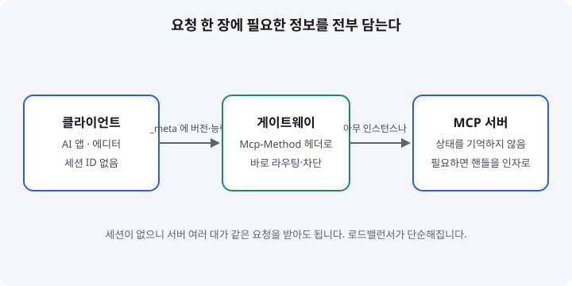
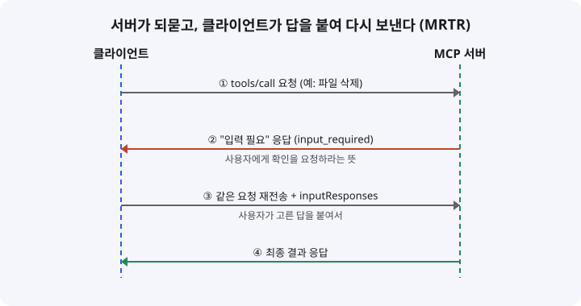

MCP 2026-07-28 스펙: 세션 없이 도는 AI 도구 연결 규격, 입문 개발자가 알아야 할 것
- MCP(AI 앱과 외부 도구를 잇는 연결 규격)가 2026년 7월 28일 새 스펙으로 바뀌었습니다.
- 연결을 시작할 때 주고받던 세션과 초기화 절차를 없애고, 요청 한 건마다 필요한 정보를 모두 담습니다.
- 서버를 여러 대 두고 운영하기 쉬워졌고, 입문자도 "요청 한 장" 구조만 이해하면 따라갈 수 있습니다.
이 글은 오늘 막 나온 소식이 아닙니다. 수집 구간(어제 16:30 ~ 오늘 16:00 KST) 안에서 새 발표를 찾지 못했고, 최근 7일 안에 다룬 주제도 피했습니다. 그래서 지금까지 공식 문서와 해설이 가장 두껍게 쌓인 기술 중 하나인 MCP 2026-07-28 스펙을 골랐습니다. 발표일과 세부 항목은 공식 블로그에서 다시 확인했습니다.
01한눈에 보기
MCP를 USB-C 단자에 비유하면 이해가 쉽습니다. 노트북과 모니터, 충전기를 같은 단자로 연결하듯, MCP는 AI 앱(클라이언트)과 파일·데이터베이스·검색 같은 도구(서버)를 같은 방식으로 연결하는 규칙입니다. 그동안 이 규칙은 "처음에 악수하고, 그 뒤로는 번호표를 들고 대화하는" 방식에 가까웠습니다. 2026-07-28 스펙은 번호표를 없애고, 주문서 한 장마다 필요한 정보를 모두 적도록 바꿨습니다.

스테이트리스(stateless): 서버가 이전 요청을 기억하지 않는다는 뜻입니다. 식당에서 주문서만 보고 음식을 내는 것과 비슷합니다.
게이트웨이: 요청이 서버에 닿기 전에 길을 정해 주는 중간 관문입니다.
02어떻게 동작하나요
첫째, 연결을 열 때 주고받던 초기화 절차(initialize)가 사라집니다. 대신 요청 하나에 프로토콜 버전, 클라이언트 정보, 능력(capabilities)을 _meta 항목에 함께 넣습니다. 서버 능력을 미리 알고 싶으면 선택 사항인 server/discover를 부를 수 있습니다.
둘째, 세션 ID 헤더(Mcp-Session-Id)가 없어졌습니다. 그래서 요청이 어느 서버 대수로 가든 상관없습니다. 상태가 꼭 필요하면 서버가 만든 핸들(예: 장바구니 번호)을 도구 인자로 주고받으면 됩니다.
셋째, 서버가 사용자에게 질문해야 할 때 쓰는 방식이 바뀌었습니다. 예전에는 연결을 열어 둔 채 질문을 흘려보냈지만, 이제는 서버가 "입력이 더 필요하다"는 응답(input_required)을 돌려주고, 클라이언트가 답을 붙여 같은 요청을 다시 보냅니다. 이 방식을 MRTR(Multi Round-Trip Requests)이라고 부릅니다.
넷째, 게이트웨이가 JSON 본문을 열어 보지 않아도 되도록 Mcp-Method와 Mcp-Name 헤더를 붙입니다. 덕분에 특정 도구 호출만 막거나 기록하는 일이 쉬워집니다.

식당에 비유하면 이렇습니다. 손님이 "비빔밥 주세요"라고 하면 직원이 "맵기는 어떻게 하시겠어요?"라고 되묻습니다. 예전에는 직원이 테이블 앞에 계속 서서 기다렸다면, 이제는 직원이 주문 용지에 질문을 적어 돌려주고, 손님이 답을 적어 같은 용지를 다시 냅니다. 직원이 누구든 용지만 보면 주문을 이어갈 수 있으니, 주방 인원이 여러 명이어도 문제가 없습니다.
03왜 지금 화제인가요
스펙은 2026년 5월 21일 릴리스 후보(RC)가 나온 뒤, 2026년 7월 28일 최종본으로 확정됐습니다. 공식 블로그는 같은 날 변경 내용을 정리했고, 이후 Cloudflare 같은 플랫폼 기업들이 자사 서버 도구를 새 방식에 맞춰 바꾸는 방법을 공개했습니다. 해설 글도 여러 편 나왔는데, 대부분 "세션 기반 서버를 운영하던 팀이 무엇을 바꿔야 하는가"에 초점을 맞추고 있습니다.
04관련 나라·기업
| 구분 | 이름 | 어떤 관련이 있나 |
|---|---|---|
| 나라 | 미국 | 이번에 다룬 기업들의 본사가 있는 나라입니다. |
| 기업 | Anthropic | MCP를 처음 공개한 곳으로 알려져 있습니다(배경 지식, 이번 글의 출처에서 직접 확인한 내용은 아닙니다). |
| 기업 | Cloudflare | Worker 기반 상태 없는 MCP 서버 구현 가이드를 공개했고, 공식 TypeScript SDK에 관련 기능이 들어갔다고 밝혔습니다. |
05기존 방식과 무엇이 다른가
| 비교 항목 | 기존 스펙 | 2026-07-28 스펙 |
|---|---|---|
| 연결 시작 | initialize 핸드셰이크가 필수 | 핸드셰이크 제거, 요청마다 _meta에 버전·능력 포함 |
| 연결 상태 | Mcp-Session-Id 세션을 유지 | 세션 없음, 필요한 상태는 핸들로 주고받음 |
| 서버가 사용자에게 질문 | 열린 스트림으로 요청을 흘려보냄 | input_required 응답 후 같은 요청을 재전송 |
| 라우팅 | 게이트웨이가 JSON 본문을 해석 | Mcp-Method, Mcp-Name 헤더로 판단 |
| 목록 응답 캐시 | 캐시 힌트 없음 | ttlMs, cacheScope 힌트 제공 |
06직접 해 보기
아직 공식 문서에서 명령어와 코드를 하나하나 확인하지 못했기 때문에, 오늘은 단계 설명만 적습니다. 순서는 다음과 같습니다.
1단계: 공식 변경 목록 읽기
MCP 공식 블로그의 2026-07-28 글에서 "What changed"와 "What breaks" 항목만 먼저 읽습니다.
2단계: 세션 의존 코드 찾기
내가 만든 서버나 쓰는 SDK 코드에서 세션 ID 헤더 이름을 검색합니다. 세션에 기대는 부분이 있는지 확인하는 단계입니다.
3단계: 질문 방식 점검
서버가 클라이언트에 먼저 질문(샘플링, 루트 요청 등)하는 코드가 있다면, 재요청 방식으로 바꿀 수 있는지 검토합니다. 샘플링과 루트는 지금 deprecated 상태이므로 새 코드에는 쓰지 않는 편이 안전합니다.
07주의할 점과 한계
- 근거 글 6개 중 공식 문서는 2건이고, 나머지는 해설 글입니다. 해설마다 세부 설명이 조금씩 달라서, 판단은 공식 블로그 기준으로 해야 합니다.
- Roots, Sampling, Logging은 deprecated 상태이지만, 최소 12개월 동안은 계속 동작합니다. 당장 깨지지는 않습니다.
- Tasks와 MCP Apps는 확장(extension)으로 옮겨졌고 기본값은 꺼져 있습니다. 필요할 때만 켜는 방식입니다.
- 서버와 클라이언트 버전이 섞이면 조용히 실패할 수 있습니다. 운영 중인 서버가 여러 개라면 어느 버전을 쓰는지부터 목록으로 만들어 두세요.
08정리
MCP 2026-07-28 스펙은 "연결을 기억하는 서버"에서 "요청 한 장이면 충분한 서버"로 방향을 바꿨습니다. 입문 개발자에게 중요한 것은 세부 항목을 다 외우는 일이 아니라, 요청마다 필요한 정보가 다 들어 있다는 원칙을 이해하는 일입니다. 이 원칙을 알면 세션, 헤더, 재요청 같은 용어가 나와도 무엇을 위한 장치인지 금방 파악할 수 있습니다.
처음 만드는 MCP 서버라면 공식 SDK를 쓰고, 세션을 기억해야 하는 기능이 있는지부터 점검해 보세요. 기존 서버를 운영하고 있다면 deprecated 기간이 끝나기 전에 옮길 계획을 세우면 됩니다.
09참고한 글
- The 2026-07-28 Specification (MCP 공식 블로그) blog.modelcontextprotocol.io · 2026.07.28
- 2026-07-28 Release Candidate (MCP 공식 블로그) blog.modelcontextprotocol.io · 2026.05.21
- The next generation of MCP (Cloudflare 블로그) blog.cloudflare.com · 2026.08.06
- MCP 2026-07-28 스펙 해설 (요즘IT) yozm.wishket.com · 2026.08.11
- MCP 2026-07-28 breaking changes (Developers Digest) developersdigest.tech · 2026.07.01
- MCP 2026-07-28 spec stateless migration guide (Digital Applied) digitalapplied.com · 2026.07.21